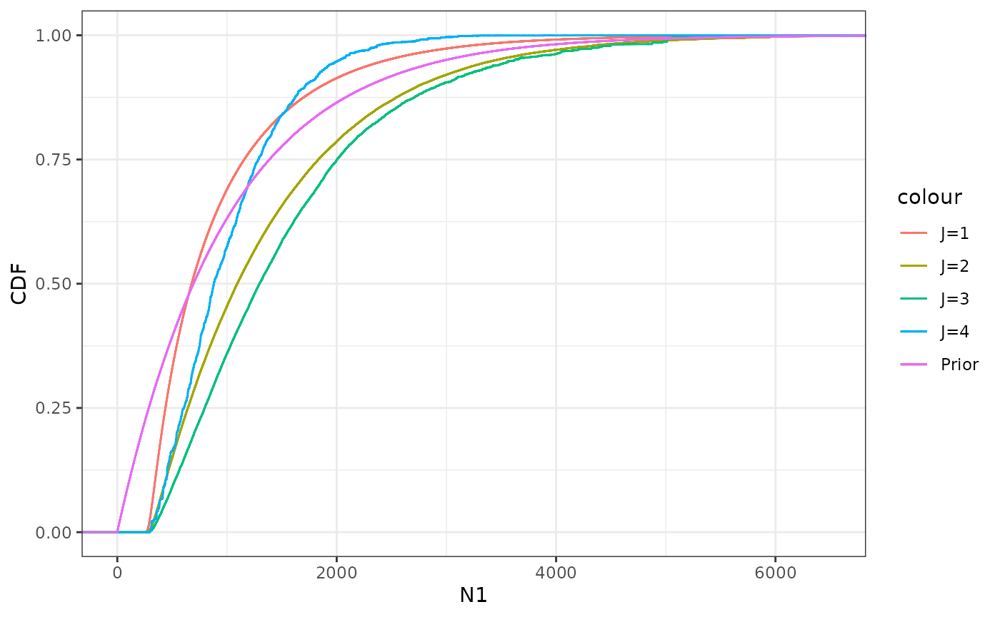
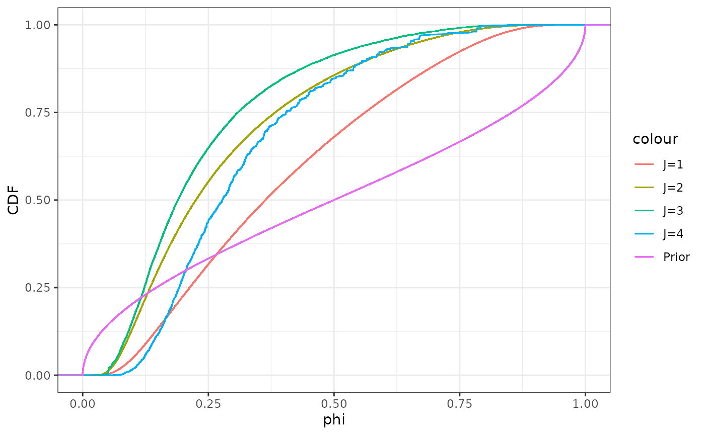
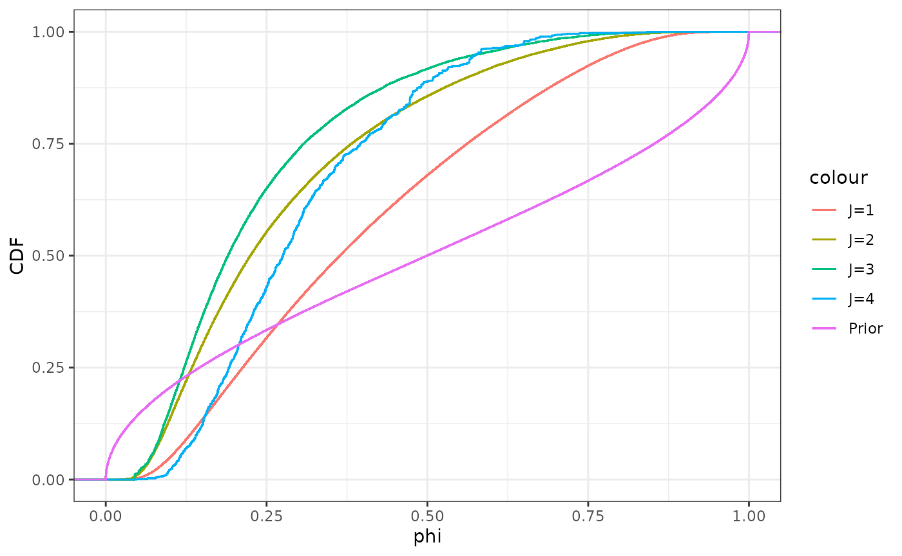

StatComp Project Example Solution: Numerical Statistics
Finn Lindgren (s0000000, finnlindgren)
Source:vignettes/articles/Project_Example_Solution.Rmd
Project_Example_Solution.RmdConfidence interval approximation assessment
We will investigate the behaviour of three approximate methods for confidence interval construction for the expectation parameter \(\lambda\) in a model for observations \(y_i\sim\textrm{Pois}(\lambda)\), \(i=1,\dots,n\). We denote the three methods given in the assignment by \(\textrm{CI}_1\), \(\textrm{CI}_2\), and \(\textrm{CI}_3\).
Theoretical interval width equivalence
Let \(z=z_{1-\alpha/2}=-z_{\alpha/2}\), where
\(z_p\) is the (lower) \(p\)-quantile of a standard \(\textrm{N}(0,1)\) distribution. Then, when
\(\overline{y} > z^2/n\), Methods 1
and 2 in pois_CI for constructing a confidence interval for
\(\lambda\) from observations \(y_i\sim \textrm{Pois}(\lambda)\), \(i=1,\dots,n\), are given by \[\begin{align*}
\textrm{CI}_1 &= (\overline{y} - z\sqrt{\overline{y}/n},
\overline{y} + z\sqrt{\overline{y}/n}), \\
\textrm{CI}_2 &= ([\sqrt{\overline{y}} - z/\sqrt{4n}]^2,
[\sqrt{\overline{y}} + z/\sqrt{4n}]^2).
\end{align*}\] The interval width for \(\textrm{CI}_1\) is \(2z\sqrt{\overline{y}/n}\). For \(\textrm{CI}_2\), the width is \[\begin{align*}
[\sqrt{\overline{y}} + z/\sqrt{4n}]^2 - [\sqrt{\overline{y}} -
z/\sqrt{4n}]^2
&=
[\overline{y} + 2z\sqrt{\overline{y}}/\sqrt{4n} + z^2/(4n)] -
[\overline{y} - 2z\sqrt{\overline{y}}/\sqrt{4n} + z^2/(4n)]
\\
&=
4z\sqrt{\overline{y}}/\sqrt{4n}
\end{align*}\] since the remaining terms cancel out. Finally
\(4/\sqrt{4}=2\), and we see that the
width of a \(\textrm{CI}_2\) interval
is the same as for \(\textrm{CI}_1\),
for any observed value \(\overline{y}>z^2/n\).
Confidence interval coverage and width assessment
We are interested in the behaviour of the three confidence interval methods when we are far away from the asymptotic limit. Instead of assuming \(n\rightarrow\infty\) or \(\lambda\rightarrow\infty\) we will instead look at the case \(n=2\), \(\lambda=3\), where the discrete nature of the sampling distribution of the maximum likelihood estimator \(\widehat{\lambda}=\overline{y}\) is still apparent.
In the my_code.R file, we’ve defined two helper
functions, multi_pos_CI and
tidy_multi_pois_CI, in order to simulate \(m\) realisations from the model, and
compute the three types of approximate confidence intervals for a
desired confidence level (also called the target or
nominal confidence level) of 90%, corresponding to nominal
error probability \(\alpha=0.1\). To
get reasonable precision in the results, we use \(m=100000\). See the code appendix for the
short analysis code.
To assess the quality of the methods, we compute an estimate of the
coverage probability as the proportion of the \(m\) simulations that the intervals cover
the true \(\lambda\) value,
Coverage in the table below. We also compute the median
width of the intervals, denoted MedWidth. For extra
details, we further estimate the probability of the lower endpoint being
too large, OutsideLower, or the upper endpoint being too
low, OutsideUpper. Finally, we compute the median of the
lower and upper endpoints, denoted MedLower and
MedUpper in the table.
| Type | Coverage | MedWidth | OutsideLower | OutsideUpper | MedLower | MedUpper |
|---|---|---|---|---|---|---|
| 1 | 0.82868 | 4.029052 | 0.02033 | 0.15099 | 0.985474 | 5.014526 |
| 2 | 0.89534 | 4.029052 | 0.04286 | 0.06180 | 1.323667 | 5.352719 |
| 3 | 0.94211 | 4.338752 | 0.04286 | 0.01503 | 1.532811 | 5.871564 |
| 4 | 0.89534 | 4.079704 | 0.04286 | 0.06180 | 1.408827 | 5.488531 |
As expected from the theoretical calculations for intervals that don’t reach \(0\) to the left, the median width for methods 1 and 2 are identical, whereas the method 3 widths are slightly larger. We see that methods 1 and 3 have too low and too high coverage, respectively, compared with the nominal overage of \(90\%\), but method 2 has a coverage very close to nominal, at \(89.58\%\). It’s clear that method 1 make most of it’s mistakes at the upper end, with as much as \(15\%\) probability of having a too low upper endpoint. In contrast, method 3 is overly cautious on the upper end, with just \(1.5\%\) error probability for the upper tail, but at the expense of wider intervals, sometimes stretching all the way to \(+\infty\).
Method 2 appears to strike a good balance between coverage probability and interval widths, with the lower tail error probability being almost the same as for method 3 (ca \(4\%\)), by moving the upper endpoint to the left, thereby reducing the interval widths and increasing the upper tail error probability to around \(6\%\). As a result, method 2 has nearly equal tail error probabilities (perfect equality would be 5%) for the test case \(n=2\), \(\lambda=3\), and appears to be the best of the three methods at capturing the behaviour of the sampling distribution of the \(\lambda\)-estimator.
In the figure below, we’ve plotted the empirical cumulative distribution functions of the interval widths for the three methods, which clearly shows the discrete nature of the interval contructions, since they are all based on \(\overline{y}\), which has a clear discrete set of possible outcomes. The equal width property for methods 1 and 2 breaks down for small values of \(\overline{y}\), due to how they handle intervals that would have gone below zero in a simplistic implementation.
In summary, method 2 appears to be preferable, despite all three methods being based on the same asympototic maximum likelihood theory. For small sample sizes, the asymptotic theory doesn’t tell the whole story, and instead one has to look more carefully at the problem structure in order to get reliable estimates.

Archaeology in the Baltic sea
Pairs of counts \((Y_{j,1},Y_{j,2})\) of left and right femurs from archaeological excavations are modelled as being conditionally independent realisations from \(\textrm{Binom}(N_j,\phi)\), where \(N_j\) is the original number of people buried at each excavtion site, and \(\phi\) is the probability of finding a buried femur. The prior distribution for each \(N_j\), \(j=1,\dots,J\), is \(\textrm{Geom}(\xi)\), where \(\xi=1/(1+1000)\) (so that \(\textrm{E}(N_j)=1000\) a priori), and for the detection probability, \(\phi\sim\textrm{Beta}(\frac{1}{2},\frac{1}{2})\). We denote \(\boldsymbol{N}=\{N_1,\dots,N_J\}\) and \(\boldsymbol{Y}=\{(Y_{1,1},Y_{1,2}),\dots,(Y_{J,1},Y_{J,2})\}\).
Joint probability function
Taking the product of the prior density for \(\phi\), the prior probabilities for \(N_j\), and the conditional observation probabilities for \(N_{j,i}\) and integrating over \(\phi\), we get the joint probability function for \((\boldsymbol{N},\boldsymbol{Y})\) \[ \begin{aligned} \textrm{P}(\boldsymbol{N},\boldsymbol{Y}) &= \int_0^1 p_\phi(\phi) \prod_{j=1}^J p(N_j) \prod_{i=1}^2 p(Y_{j,i}|N_j,\phi)\,\mathrm{d}\phi \\ &= \int_0^1 \frac{\phi^{a-1}(1-\phi)^{b-1}}{B(a,b)} \prod_{j=1}^J p(N_j) \prod_{i=1}^2 {N_j \choose Y_{j,i}} \phi^{Y_{j,i}}(1-\phi)^{N_j-Y_{j,i}} \,\mathrm{d}\phi \\ &= \int_0^1 \frac{\phi^{\widetilde{a}-1}(1-\phi)^{\widetilde{b}-1}}{B(a,b)} \,\mathrm{d}\phi\, \prod_{j=1}^J p(N_j) \prod_{i=1}^2 {N_j \choose Y_{j,i}} , \end{aligned} \] where \(\widetilde{a} = a+\sum_{j=1}^J\sum_{i=1}^2 Y_{j,i}\) and \(\widetilde{b} = b+\sum_{j=1}^J\sum_{i=1}^2 (N_j - Y_{j,i})\). Then the integral can be renormalised to an integral of the distribution probability density function for a \(\textrm{Beta}(\widetilde{a},\widetilde{b})\) distribution: \[ \begin{aligned} \textrm{P}(\boldsymbol{N},\boldsymbol{Y}) &= \frac{B(\widetilde{a},\widetilde{b})}{B(a,b)} \int_0^1 \frac{\phi^{\widetilde{a}-1}(1-\phi)^{\widetilde{b}-1}}{B(\widetilde{a},\widetilde{b})} \,\mathrm{d}\phi\, \prod_{j=1}^J p(N_j) \prod_{i=1}^2 {N_j \choose Y_{j,i}} \\ &= \frac{B(\widetilde{a},\widetilde{b})}{B(a,b)} \prod_{j=1}^J p(N_j) \prod_{i=1}^2 {N_j \choose Y_{j,i}} . \end{aligned} \]
Credible intervals for \(N_j\) and \(\phi\)
In order to obtain posterior credible intervals for the unknown
quantities \(\boldsymbol{N}=\{N_1,\dots,N_J\}\), and
\(\phi\), we implement an importance
sampling method that sample each \(N_j\) from a shifted Geometric distribution
with smallest value equal to the smallest valid \(N_j\), given the observed counts, and
expectation corresponding to \(\phi=1/4\). After sampling the \(\boldsymbol{N}\) values, the corresponding
importance weights \(w_k\), stored as
Log_Weights equal to \(\log(w_k)\) normalised by subtracting the
larges \(\log(w_k)\) value. Finally,
\(\phi\) values are sampled directly
from the conditional posterior distribution \((\phi|\boldsymbol{N},\boldsymbol{Y})\sim\textrm{Beta}\left(\frac{1}{2}+\sum_{j,i}
Y_{i,j},\frac{1}{2}+\sum_{j,i} (N_j-Y_{i,j})\right)\). The
implementation is in the arch_importance() function in
my_code.R shown in the code appendix, and produces an
importance sample of size \(K\). To
achieve relatively reliable results, we use \(K=100000\), for each of \(J=1\), \(2\), \(3\), and \(4\), which takes ca 4 seconds on my
computer.
First, we use stat_ewcdf to plot the emprirical
cumulative distribution functions for the importance weighted posterior
samples of \(N_1\), for \(J=1,\dots,4\). We can see that the random
variability increases for larger \(J\),
indicating a lower efficiency of the importance sampler. Also included
is the CDF for the prior distribution for \(N_1\). Except for the lower end of the
distribution, it’s not immediately clear what effect the observations
have on the distribution.
## Warning: The following aesthetics were dropped during statistical transformation:
## weights
## ℹ This can happen when ggplot fails to infer the correct grouping structure in
## the data.
## ℹ Did you forget to specify a `group` aesthetic or to convert a numerical
## variable into a factor?
## The following aesthetics were dropped during statistical transformation:
## weights
## ℹ This can happen when ggplot fails to infer the correct grouping structure in
## the data.
## ℹ Did you forget to specify a `group` aesthetic or to convert a numerical
## variable into a factor?
## The following aesthetics were dropped during statistical transformation:
## weights
## ℹ This can happen when ggplot fails to infer the correct grouping structure in
## the data.
## ℹ Did you forget to specify a `group` aesthetic or to convert a numerical
## variable into a factor?
## The following aesthetics were dropped during statistical transformation:
## weights
## ℹ This can happen when ggplot fails to infer the correct grouping structure in
## the data.
## ℹ Did you forget to specify a `group` aesthetic or to convert a numerical
## variable into a factor?
Next we do a corresponding plot for \(\phi\). In contrast to \(N_1\), here it’s more clear that the more observation pairs we get, the more concentrated the distribution for \(\phi\) gets. Each new observation pair also influences in particular the lower end of the distribution, with the lower quantiles clearly increasing for \(J=4\) even though the upper quantiles remain relatively stable for \(J\geq 2\).
## Warning: The following aesthetics were dropped during statistical transformation:
## weights
## ℹ This can happen when ggplot fails to infer the correct grouping structure in
## the data.
## ℹ Did you forget to specify a `group` aesthetic or to convert a numerical
## variable into a factor?
## The following aesthetics were dropped during statistical transformation:
## weights
## ℹ This can happen when ggplot fails to infer the correct grouping structure in
## the data.
## ℹ Did you forget to specify a `group` aesthetic or to convert a numerical
## variable into a factor?
## The following aesthetics were dropped during statistical transformation:
## weights
## ℹ This can happen when ggplot fails to infer the correct grouping structure in
## the data.
## ℹ Did you forget to specify a `group` aesthetic or to convert a numerical
## variable into a factor?
## The following aesthetics were dropped during statistical transformation:
## weights
## ℹ This can happen when ggplot fails to infer the correct grouping structure in
## the data.
## ℹ Did you forget to specify a `group` aesthetic or to convert a numerical
## variable into a factor?
Using wquantile to extract lower and upper \(5\%\) quantiles we obtain approximate \(90\%\) posterior credible intervals for
\(N_1\) and \(\phi\) as shown in the following table.
| J | Variable | Lower | Upper | Width |
|---|---|---|---|---|
| 1 | N1 | 313.0000000 | 2459.0000000 | 2146.0000000 |
| 2 | N1 | 370.0000000 | 3455.0000000 | 3085.0000000 |
| 3 | N1 | 425.0000000 | 3578.0000000 | 3153.0000000 |
| 4 | N1 | 426.0000000 | 2122.0000000 | 1696.0000000 |
| 1 | Phi | 0.1000784 | 0.7881868 | 0.6881085 |
| 2 | Phi | 0.0710310 | 0.6642228 | 0.5931918 |
| 3 | Phi | 0.0690307 | 0.5799196 | 0.5108890 |
| 4 | Phi | 0.1154595 | 0.5758585 | 0.4603989 |
We can see that the credible intervals for \(N_1\) are strongly linked to the information in the posterior distribution for \(\phi\). Interestingly, due to the lowering of the lower endpoint for \(\phi\) for \(J=2\) and \(3\), the width of the \(N_1\) interval actually increases when we add the information from the second and third. This is stark contrast to our common intuition that would expect our uncertainty to decrease when we collect more data. The behaviour here is partly due to the random variability inherent in a small sample, but also due to the strong non-linearity of the estimation problem, where the products \(\phi N_j\) are much easier to estimate than the individual \(\phi\) and \(N_j\) parameters. For \(J=4\), the interval width for \(N_1\) finally decreases, as well as the width for the \(\phi\) interval. Looking at the values of the observations, we can see that the \(J=4\) case has much larger values than the other cases, which leads to it providing relatively more information about the \(\phi\) parameter.
From a practical point of view, it’s clear that this estimation problem does not have an easy solution. Even with multiple excavations, and assuming that the model is appropriate and has the same value \(\phi\) for \(\phi\) for every excavation, we only gain a modest amount of additional information. On the positive side, if the model does a good job of approximating reality, then borrowing strength across multiple excavations does improve the estimates and uncertainty information for each excavation. For further improvements, one would likely need to more closely study the excavation precedures, to gain a better understanding of this data generating process, which might then lead to improved statistical methods and archaeologically relevant outcomes.
Extra
Effective sample size
Using the method for computing effective importance sample size from later in the course we can see that even with the more efficient method, the sampling is very inefficient for \(J=4\), indicating that an improved choice of importance distribution for \(N_j\) could improve the precision and accuracy of the results:
| J | EffSampleSize | RelEff |
|---|---|---|
| 1 | 827041.9664 | 0.8270420 |
| 2 | 117379.4513 | 0.1173795 |
| 3 | 3918.2005 | 0.0039182 |
| 4 | 789.4356 | 0.0007894 |
Here, EffSampleSize is the approximate effective sample
size \((\sum_k w_k)^2/\sum w_k^2\), and
RelEff is the relative efficiency, defined as the ratio
between EffSampleSize and \(K=100000\).
Code appendix
Function definitions
# Finn Lindgren (s0000000, finnlindgren)
# Part 1 ####
# Simulate samples of size n from Pois(lambda), m times, and construct
# confidence intervals using one of the three methods implemented in pois_CI
#
# Input:
# m: The number of samples
# n: The size of each sample
# lambda: The True value of the lambda-parameter
# alpha: The target/nominal error probability for the confidence intervals
# type: 1, 2, 3, or 4, indicating which CI method to use
#
# Output:
# A data frame with `m` rows and columns `Lower` and `Upper`, with one
# confidence interval per row
multi_pois_CI <- function(m, n, lambda, alpha, type) {
Lower = numeric(m)
Upper = numeric(m)
for (m_idx in seq_len(m)) {
y <- rpois(n, lambda = lambda)
CI <- pois_CI(y = y, alpha = alpha, type = type)
Lower[m_idx] <- CI[1]
Upper[m_idx] <- CI[2]
}
result <- data.frame(Lower = Lower, Upper = Upper)
}
tidy_multi_pois_CI_alt <- function(m, n, lambda, alpha) {
Lower <- matrix(0, m, 4)
Upper <- matrix(0, m, 4)
for (m_idx in seq_len(m)) {
y <- rpois(n, lambda = lambda)
for (type in 1:4) {
CI <- pois_CI(y = y, alpha = alpha, type = type)
Lower[m_idx, type] <- CI[1]
Upper[m_idx, type] <- CI[2]
}
}
data.frame(
Index = rep(1:m, times = 4),
Type = rep(1:4, each = m),
Lower = as.vector(Lower),
Upper = as.vector(Upper)
)
}
# Simulate samples of size n from Pois(lambda), m times, and construct
# confidence intervals using all three methods implemented in pois_CI.
# This implementation uses independent simulations for the three method, by
# calling multi_pois_CI for each interval type. An alternative implementation
# would be to use the same samples for all three methods.
#
# Input:
# m: The number of samples
# n: The size of each sample
# lambda: The True value of the lambda-parameter
# alpha: The target/nominal error probability for the confidence intervals
#
# Output:
# A data frame with `3m` rows and columns `Lower`, `Upper`, and `Type`,
# with one confidence interval per row, calculated with the method indicated
# in the `Type` column
tidy_multi_pois_CI <- function(m, n, lambda, alpha) {
result <-
rbind(
cbind(
multi_pois_CI(
m = m, n = n, lambda = lambda,
alpha = alpha, type = 1
),
Type = 1
),
cbind(
multi_pois_CI(
m = m, n = n, lambda = lambda,
alpha = alpha, type = 2
),
Type = 2
),
cbind(
multi_pois_CI(
m = m, n = n, lambda = lambda,
alpha = alpha, type = 3
),
Type = 3
),
cbind(
multi_pois_CI(
m = m, n = n, lambda = lambda,
alpha = alpha, type = 4
),
Type = 4
)
)
result
}
# Part 2 ####
# Joint log-probability
#
# Usage:
# log_prob_NY(N, Y, xi, a, b)
#
# Calculates the joint probability for N and Y, when
# N_j ~ Geom(xi)
# phi ~ Beta(a, b)
# Y_{ji} ~ Binom(N_j, phi)
# For j = 1,...,J
#
# Inputs:
# N: vector of length J
# Y: data.frame or matrix of dimension Jx2
# xi: The probability parameter for the N_j priors
# a, b: the parameters for the phi-prior
#
# Output:
# The log of the joint probability for N and Y
# For impossible N,Y combinations, returns -Inf
log_prob_NY <- function(N, Y, xi, a, b) {
# Convert Y to a matrix to allow more vectorised calculations:
Y <- as.matrix(Y)
if (any(N < Y) || any(Y < 0)) {
return(-Inf)
}
atilde <- a + sum(Y)
btilde <- b + 2 * sum(N) - sum(Y) # Note: b + sum(N - Y) would be more general
lbeta(atilde, btilde) - lbeta(a, b) +
sum(dgeom(N, xi, log = TRUE)) +
sum(lchoose(N, Y))
}
# Importance sampling for N,phi conditionally on Y
#
# Usage:
# arch_importance(K,Y,xi,a,b)
#
# Inputs:
# Y,xi,a,b have the same meaning and syntax as for log_prob_NY(N,Y,xi,a,b)
# The argument K defines the number of samples to generate.
#
# Output:
# A data frame with K rows and J+1 columns, named N1, N2, etc,
# for each j=1,…,J, containing samples from an importance sampling
# distribution for Nj,
# a column Phi with sampled phi-values,
# and a final column called Log_Weights, containing re-normalised
# log-importance-weights, constructed by shifting log(w[k]) by subtracting the
# largest log(w[k]) value, as in lab 4.
arch_importance <- function(K, Y, xi, a, b) {
Y <- as.matrix(Y)
J <- nrow(Y)
N_sample <- matrix(rep(pmax(Y[, 1], Y[, 2]), each = K), K, J)
xi_sample <- 1 / (1 + 4 * N_sample)
N <- matrix(rgeom(K * J, prob = xi_sample), K, J) + N_sample
colnames(N) <- paste0("N", seq_len(J))
Log_Weights <- vapply(
seq_len(K),
function(k) log_prob_NY(N[k, , drop = TRUE], Y, xi, a, b),
0.0) -
rowSums(dgeom(N - N_sample, prob = xi_sample, log = TRUE))
phi <- rbeta(K, a + sum(Y), b + 2 * rowSums(N) - sum(Y))
cbind(as.data.frame(N),
Phi = phi,
Log_Weights = Log_Weights - max(Log_Weights))
}Analysis code
Confidence intervals
Poisson parameter interval simulations:
n <- 2
lambda_true <- 3
result <- tidy_multi_pois_CI_alt(100000, n, lambda_true, alpha = 0.1)Summarise the coverage probabilities and interval widths:
result %>%
group_by(Type) %>%
summarise(
Coverage = mean((Lower <= lambda_true) & (lambda_true <= Upper)),
MedWidth = median(Upper - Lower),
OutsideLower = mean(lambda_true < Lower),
OutsideUpper = mean(lambda_true > Upper),
MedLower = median(Lower),
MedUpper = median(Upper)
) %>%
knitr::kable()Plot the CDFs for the CI width distributions:
Archaeology
Compute credible intervals for \(N_j\) for different amounts of data, \(J\):
xi <- 1 / 1001
a <- 0.5
b <- 0.5
K <- 1000000
NW1 <- arch_importance(K, arch_data(1), xi, a, b)
NW2 <- arch_importance(K, arch_data(2), xi, a, b)
NW3 <- arch_importance(K, arch_data(3), xi, a, b)
NW4 <- arch_importance(K, arch_data(4), xi, a, b)For completeness, we compute all the credible intervals for \(N_j\), \(1\leq J\), for each \(J=1,\dots,4\), but the analysis focuses on \(N_1\) and \(\phi\):
CI <- rbind(
NW1 %>%
summarise(
J = 1,
End = c("Lower", "Upper"),
N1 = wquantile(N1,
probs = c(0.05, 0.95), na.rm = TRUE,
type = 1, weights = exp(Log_Weights)
),
N2 = NA,
N3 = NA,
N4 = NA,
Phi = wquantile(Phi,
probs = c(0.05, 0.95), na.rm = TRUE,
type = 7, weights = exp(Log_Weights)
)
),
NW2 %>%
summarise(
J = 2,
End = c("Lower", "Upper"),
N1 = wquantile(N1,
probs = c(0.05, 0.95), na.rm = TRUE,
type = 1, weights = exp(Log_Weights)
),
N2 = wquantile(N2,
probs = c(0.05, 0.95), na.rm = TRUE,
type = 1, weights = exp(Log_Weights)
),
N3 = NA,
N4 = NA,
Phi = wquantile(Phi,
probs = c(0.05, 0.95), na.rm = TRUE,
type = 7, weights = exp(Log_Weights)
)
),
NW3 %>%
summarise(
J = 3,
End = c("Lower", "Upper"),
N1 = wquantile(N1,
probs = c(0.05, 0.95), na.rm = TRUE,
type = 1, weights = exp(Log_Weights)
),
N2 = wquantile(N2,
probs = c(0.05, 0.95), na.rm = TRUE,
type = 1, weights = exp(Log_Weights)
),
N3 = wquantile(N3,
probs = c(0.05, 0.95), na.rm = TRUE,
type = 1, weights = exp(Log_Weights)
),
N4 = NA,
Phi = wquantile(Phi,
probs = c(0.05, 0.95), na.rm = TRUE,
type = 7, weights = exp(Log_Weights)
)
),
NW4 %>%
summarise(
J = 4,
End = c("Lower", "Upper"),
N1 = wquantile(N1,
probs = c(0.05, 0.95), na.rm = TRUE,
type = 1, weights = exp(Log_Weights)
),
N2 = wquantile(N2,
probs = c(0.05, 0.95), na.rm = TRUE,
type = 1, weights = exp(Log_Weights)
),
N3 = wquantile(N3,
probs = c(0.05, 0.95), na.rm = TRUE,
type = 1, weights = exp(Log_Weights)
),
N4 = wquantile(N4,
probs = c(0.05, 0.95), na.rm = TRUE,
type = 1, weights = exp(Log_Weights)
),
Phi = wquantile(Phi,
probs = c(0.05, 0.95), na.rm = TRUE,
type = 7, weights = exp(Log_Weights)
)
)
)Restructure the interval data.frame to focus on \(N_1\) and \(\phi\) only:
CI_ <- CI %>%
pivot_longer(
cols = c(N1, N2, N3, N4, Phi),
names_to = "Variable",
values_to = "value"
) %>%
pivot_wider(
names_from = End,
values_from = value
) %>%
filter(!is.na(Lower)) %>%
mutate(Width = Upper - Lower)
knitr::kable(CI_ %>% filter(Variable %in% c("N1", "Phi")) %>%
arrange(Variable, J))